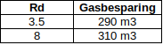
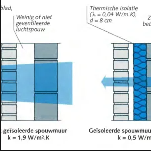

Ik denk dat het goed is om dit onderwerp eens onderling te bespreken en te proberen binnen een gemeente een eenduidig beleid uit te dragen.
En mogelijk dat we heel gemakkelijk een eensluidende conclusie kunnen trekken als we ons meer richten op biobased isolatiematerialen.
Hoewel ik wiskundig redelijk onderlegd ben,
schrok ik enorm van de afhankelijkheid van de gasbesparing van de verschillende isolatiematerialen.
Of beter gezegd van de niet-afhankelijkheid.

Klopt dit ?
Ja dit klopt.
een voorbeeld dat je uit het hoofd kan uitrekenen:
- We gaan uit van een niet geïsoleerd gebouwelement (Rc=0),
- dat een warmteverlies heeft waarvoor je 400 m3 gas nodig hebt
geval 1):
Stel je brengt extra isolatie aan met een Rd = 3
Daardoor bespaar je 360 m3 gas
geval 2):
Wat gebeurt er als je de isolatie verdubbelt, dus de total Rd = 6 ?
De gasbesparing stijgt naar 380 m3
In geval 1) is namelijk het resterende gasverbruik 40 m3 gas.
Als je de isolatie verdubbelt, halveert het gasverbruik, dus gasverbruik = 20 m3 gas.
Moeten we dus streven naar maximalisatie van de R-waarde ???
Hoewel ik zelf nog geen harde conclusies heb getrokken, voel ik op dit moment het meest voor de volgende, waarbij punt 3 misschien wel de hoofdconclusie is.
1. We moeten minder prioriteit stellen aan het maximaliseren van de R-waarde
2. Misschien moeten we Rapport standaard en streefwaardes bestaande woningbouw nog eens goed doorlezen
3. We kunnen gefundeerd Biobased materialen adviseren, ondanks hun wat lagere R-waarde
| Rd | Gasbesparing |
|---|---|
| 3.5 | 290 m3 |
| 8 | 310 m3 |
